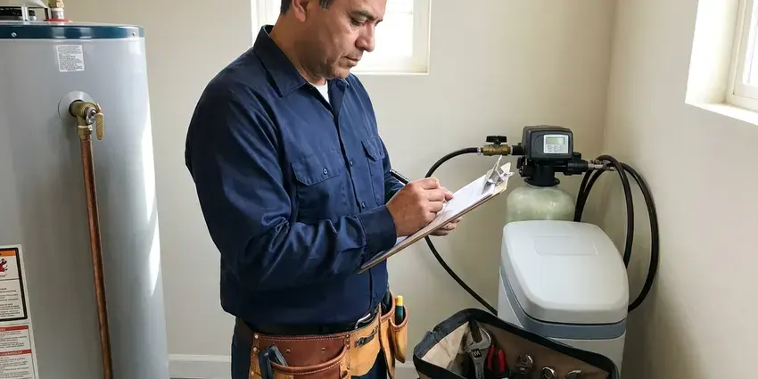

Plumbers for Frozen Pipes in Jurupa Valley, CA
When winter temperatures drop in Jurupa Valley, frozen pipes can become a serious concern for homeowners. FKM Plumbing is here to provide professional frozen pipe diagnosis and repair services across Southern California.
- Burst Pipe Repair
- Burst Pipe Repair
- Preventative Measures
- Prevent Burst Pipes
Get Frozen Pipes Thawed Safely Before They Burst in Jurupa Valley, CA.
Contact FKM Plumbing right away for professional help with your frozen plumbing issues.
Prompt, Careful Plumbers for Frozen Pipes When Cold Nights Hit Jurupa Valley, CA
FKM Plumbing knows where plumbing is most likely to freeze: exterior walls, attics, crawl spaces, outdoor hose bibs, backflow preventers, pool and irrigation lines and pipes in unheated garages. We find the frozen section, thaw it safely and repair any split before the water pressure comes back.
Our expertise includes:
- Expert repair for burst pipes and leaks.
- Burst pipe repair in walls, attics, garages and outdoor lines
- Thermal imaging for concealed frozen sections.

Additional Plumbing Maintenance Services in Jurupa Valley, CA
Our maintenance and specialty plumbing services in Jurupa Valley, CA protect your home year-round and extend the life of every system.




Residential Plumbing Service near Jurupa Valley


Customers
Why Choose FKM Plumbing for Plumbers for Frozen Pipes in Jurupa Valley, CA?
We don't just fix the immediate problem, we also offer advice on preventing future freezing, tailored to the Southern California climate.
- Advanced Tools, We use specialized equipment like hydro-jetters for clearing ice blockages and thermal cameras to locate frozen sections without unnecessary demolition.
- Rapid Response, FKM Plumbing responds quickly to address frozen pipe emergencies, minimizing the risk of burst pipes and water damage.
- Freeze Proofing, We insulate, add heat cable or reroute vulnerable lines to prevent the next freeze.
Citywide Coverage
FKM Plumbing proudly serves every neighborhood of Jurupa Valley, ensuring that no matter where you are located, our expert plumbers can reach you quickly when frozen pipes strike. We understand that these emergencies require immediate attention, and our local presence helps us deliver that.
Experienced Team
Our team of plumbers has extensive experience with frozen pipe situations, a serious issue whenever a hard freeze reaches Southern California. They are well trained in safe thawing methods and effective burst pipe repair techniques.
Safety-First Approach
All burst pipe repairs are made with code-approved materials and fittings and pressure tested before we go. If a water heater or gas appliance was affected, we inspect it for safe operation.
Trusted Certified Jurupa Valley Plumbing Services Professionals
At FKM Plumbing, we take pride in providing licensed, certified plumbing services throughout Jurupa Valley, CA. Backed by recognized industry credentials, our experienced plumbers combine technical skill with genuine customer care. Whether it is repair, installation, or maintenance, we follow strict safety and quality standards to deliver long-lasting results you can trust.
Call Us Now PHCC Plumbing Contractor Recognition
PHCC Plumbing Contractor Recognition Better Business Bureau (BBB) Accreditation
Better Business Bureau (BBB) Accreditation Angi Certified Pro
Angi Certified Pro ISO 9001 Quality Management Certification
ISO 9001 Quality Management CertificationTrusted Plumbers for Frozen Pipes Services in Jurupa Valley, CA
Frozen Pipe Thawing in Jurupa Valley
When a faucet only trickles or nothing comes out after a cold night, ice is blocking the line somewhere. We open a faucet downstream to relieve pressure, then locate the frozen section with thermal imaging. Copper and galvanized pipes can be thawed with an electric pipe thawing machine that warms the metal from the inside. PEX and CPVC are warmed gently with heat guns or infrared heaters to avoid softening the plastic.

Slab Leak Detection for Frozen Pipes in Jurupa Valley
In Jurupa Valley, many homes have plumbing lines running through or under the concrete slab, and lines near the edge of the slab or in unheated areas can freeze and burst. If you suspect a slab leak after a freeze, perhaps from a sudden drop in water pressure or unexplained damp spots, our technicians use acoustic listening devices and thermal imaging to accurately locate the leak without destructive guesswork. We then provide focused repair plans to fix the damaged pipe.
Preventative Pipe Insulation Services in Jurupa Valley
The best way to deal with frozen pipes is to prevent them. FKM Plumbing provides complete pipe insulation services, focusing on vulnerable areas like outdoor faucets, pipes in unheated basements, crawl spaces, and exterior walls. We use durable foam insulation, fiberglass wraps, and sometimes heat tape to protect your pipes from freezing temperatures. This preventive approach can save you from costly repairs and headaches during winter in Jurupa Valley.
Frozen Water Line Diagnosis in Jurupa Valley, CA
Identifying exactly where a pipe is frozen can be difficult without specialized tools. FKM Plumbing uses diagnostic equipment, including thermal imaging cameras and acoustic leak detectors, to pinpoint the precise location of frozen sections in your water lines. This allows us to target the thawing process effectively and avoid needless wall or ceiling demolition. Our accurate diagnosis ensures a more efficient and less invasive repair process in Jurupa Valley, CA.
Hose Bib and Outdoor Faucet Repair in Jurupa Valley, CA
Outdoor faucets freeze quickly, especially with a hose left connected. A split often hides inside the wall and only shows when the faucet is turned on in spring. We replace damaged hose bibs with frost-free models from brands like Woodford and Prier that shut off water inside the warm part of the wall. Insulated covers add more protection on freezing nights.
Heat Tape Installation for Exposed Pipes in Jurupa Valley
For pipes in particularly cold or exposed areas, standard insulation might not be enough. FKM Plumbing offers professional heat tape installation, an electric heating cable that warms pipes to prevent freezing. We handle proper installation, including thermostats and ground fault circuit interrupters, for safe and effective operation. This solution is ideal for pipes in crawl spaces, well houses, or along exterior walls in Jurupa Valley.
Burst Pipe Repair in Jurupa Valley, CA
Water expands as it freezes, and that pressure can split copper, crack PVC fittings and pop PEX connections. Leaks often appear only after the ice melts, sometimes hours later. We shut off the water, open the wall or ceiling only where needed and replace the damaged section. Every repair is pressure tested so you know the line is sound.

Pool, Outdoor Equipment and Water Heater Line Freeze Damage in Jurupa Valley, CA
Pool equipment lines, outdoor kitchen and ice maker supply tubing and water heater connections in garages are all frequent freeze points. Thin copper or plastic tubing in exposed spots splits easily in a hard freeze. We repair these lines and can add shutoff and drain valves so they can be winterized quickly. If a water heater connection or valve was damaged, we repair it and check the unit.
Plumbers for Frozen Pipes Near Me in Jurupa Valley, CA
Our local expertise means we're familiar with the challenges of plumbing in Jurupa Valley, from older homes with less insulated pipes to newer construction. For reliable frozen pipe services near me, you can trust our licensed and experienced plumbers to provide effective solutions and lasting repairs.
When you search for plumbers for frozen pipes near me in Jurupa Valley, CA, you want a reliable and swift response. FKM Plumbing is your local expert, always ready to tackle your frozen pipe emergencies with the right tools and knowledge. We understand the concerns of Southern California homeowners and act quickly to prevent further damage.
FKM Plumbing at a Glance
- Licensed and insured plumbers serving Jurupa Valley, CA
- Same-day appointments and 24/7 emergency response
- Upfront, flat-rate pricing before work begins
- 4.8-star rated by 754+ Southern California customers
Jurupa Valley Map
Jurupa Valley Information
- Population
- 107,321
- Area codes
- 951/909/562
- Service area
- Jurupa Valley and communities within 40 miles
- Nearby
- Riverside, Eastvale, Fontana, Ontario
Having a reliable plumber for frozen pipes in Jurupa Valley, CA is crucial for protecting homes from significant water damage and costly repairs when winter weather turns. On an occasional cold night, covering backflow preventers and outdoor valves is typically enough to avoid a break.
Expert Services
Trust our professionals for reliable FKM Plumbing solutions in Jurupa Valley, CA.
Our Specialized Plumbing Services in Jurupa Valley, CA
At FKM Plumbing, we provide a complete range of plumbing services across Jurupa Valley, CA. From leak detection to full system installations, our team ensures fast, precise, and affordable service for both residential and commercial properties. Explore our core services below:


Here Is How Our Plumbers for Frozen Pipes Process Works in Jurupa Valley, CA
Our process for handling frozen pipes is designed for speed, efficiency, and limited disruption to your home.
Request a Quote
Call (213) 871-0701 and tell us which fixtures have no water and whether you see any leaks. We give you safety steps to take while we are on the way.
Locate and Thaw
We use thermal imaging to find the frozen section and thaw it with flame-free equipment. Faucets stay open so pressure can escape while the ice melts.
Test and Protect
We pressure test the line and repair any splits. Then we insulate or upgrade vulnerable pipes so they are ready for the next cold night.
Frequently Asked Questions About Plumbers for Frozen Pipes in Jurupa Valley
Thawing an accessible frozen pipe in Jurupa Valley usually costs $150 to $400. Burst pipe repairs typically run $250 to $800, with higher costs when drywall or ceilings must be opened. We give you pricing before work begins.
Generally, simple thawing of frozen pipes does not require a permit in Jurupa Valley, CA. However, if a frozen pipe bursts and requires significant repair or replacement of a section of your plumbing system, a plumbing permit may be necessary. FKM Plumbing will take care of all required permitting for you.
While any pipe can freeze, older galvanized steel or copper pipes in uninsulated areas are usually more susceptible to bursting due to their rigid material. PEX piping is generally more freeze-resistant because it can expand, though it can still freeze and burst under extreme conditions. Our team works with all pipe types.
Minor thawing and simple pipe repairs typically do not require a permit in Jurupa Valley. However, if the repair involves significant re-piping, altering the main water line, or work on gas lines tied to water heaters, a plumbing permit may be necessary. Our team handles all necessary permitting for you.
Disconnect hoses, cover outdoor faucets and backflow preventers, and let a faucet drip on exterior walls during hard freezes. Insulating attic, crawl space and garage lines helps most. We can install insulation, heat cable or relocate vulnerable pipes.
You can attempt to thaw an exposed, easily accessible pipe with a hair dryer on a low setting or warm towels. However, never use open flames or high heat, as this can damage pipes or create fire hazards. If the pipe is hidden, already burst, or you're unsure, it's always safer to call a licensed plumber to prevent further damage.
FKM Plumbing stands behind our frozen pipe repairs in Jurupa Valley. We offer a solid warranty on both parts and labor, typically for one year, so you know the repair will hold up. We use durable materials and professional techniques to provide lasting solutions and peace of mind.
The time it takes to thaw a frozen pipe varies a lot. A small, easily accessible section might thaw in 30 minutes with professional tools. More extensive freezes, especially in hidden walls or under floors, can take several hours. Our goal is always to restore water flow as quickly and safely as possible.
What People Are Saying About Our Plumbing Experts?

Laura S.
I scheduled a water heater replacement, and the team made the process smooth and affordable. The new unit works perfectly, and they cleaned up after completing the job.
Water Heater Replacement · Fontana, CA
Robert G.
The trenchless sewer replacement saved our front yard. They walked us through the camera inspection footage first so we knew exactly what we were paying for.
Sewer Line Replacement · Jurupa Valley, CA
Patricia H.
We had a slab leak that two other companies could not find. FKM Plumbing located it in under an hour, explained our options, and the price matched the quote to the dollar.
Slab Leak Repair · Fontana, CA
Daniel K.
A pipe burst at 11 pm and they actually answered. The plumber showed up within the hour, shut everything down, and had us back to normal the next morning. Could not ask for more.
Emergency Plumbing · Ontario, CAJames P.
Our commercial plumbing system had a leak under the sink, and FKM Plumbing handled it professionally. The plumbers arrived quickly and restored everything without disruption to our customers.
Commercial Plumbing · Rialto, CA
Mark T.
When our office needed drain cleaning, FKM Plumbing provided quick, reliable service. The plumber arrived on time and made sure every drain flowed perfectly before leaving. Very satisfied.
Drain Cleaning · Rialto, CA